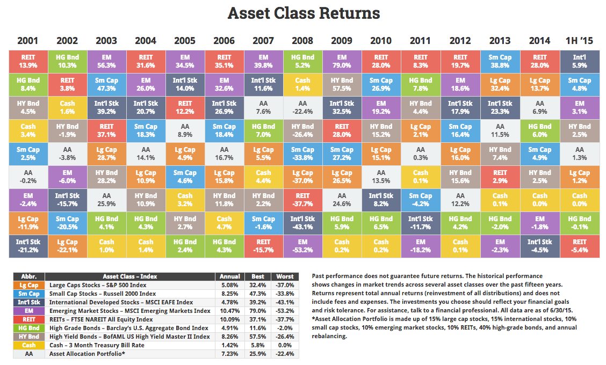

Asset Allocation: портфельный эффект
При выборе активов в портфель нужно помнить четыре правила:
- Классы активов должны коренным образом отличаться друг от друга. Например, акции и облигации — очень разные активы: первые представляют собой долю в бизнесе, а вторые — долг. Акции США отличаются от акций других стран: другие валюты, другая экономика. Товары и недвижимость тоже отличаются от акций и облигаций по своей сути. Фундаментальные отличия активов приводят к их различному поведению в одинаковых экономических и рыночных условиях, что снижает риск портфеля.
- Корреляция между активами должна быть низкой. Чтобы выявить фундаментальные различия между активами, нужно проанализировать корреляцию между ними, причем желательно за различные периоды. Постоянная высокая корреляция +0,5 и больше означает, что между активами нет большой разницы в плане риска и они ведут себя схожим образом. Низкая положительная или отрицательная корреляция означает, что актив ведут себя по разному и включение таких активов снизит риск портфеля.
- <Положительная реальная доходность — актив должен иметь положительную реальную (за вычетом инфляции) ожидаемую доходность на долгом сроке. Например, исторически акции США опережали инфляцию примерно на 8%, а государственные облигации на 3%./li>
- Диверсификация — каждый класс активов должен быть диверсифицирован, то есть включать в себя большое количество ценных бумаг. Если что-то случиться с ценными бумагами какой-то одной компании, это слабо отразится на всем портфеле.
Что такое портфельный эффект?
Только грамотно составленный инвестиционный портфель сможет сгенерировать то, что называет портфельный эффект. Если взять два актива — акции и облигации США и составить из них множество портфелей с разными пропорциями, то доходность и риск портфелей на диаграмме будет выглядеть в виде кривой, которая называется границей эффективности Марковица. На горизонтальной оси представлен риск (стандартное отклонение), на вертикальной — средняя годовая доходность. Точки на линии представляют различные варианты распределения активов в портфеле, начиная от 100% акций до 100% облигаций. Множество точек образует кривую со всевозможным сочетанием пропорций активов в портфеле. В зависимости от распределения активов и выбранных классов активов эта кривая может изгибаться.
Как видно, портфель, состоящий на 100% из облигаций продемонстрировал низкую доходность и низкий риск, а портфель из акций наоборот — высокую доходность при высоком риске.На первый взгляд, портфель в пропорции 50:50 по риску и доходности должен оказаться посередине прямой линии, проведенной между крайними точками. Но в реальности риск такого портфеля оказался значительно ниже. Такой эффект возник в результате ребалансировки портфеля.
Важно отметить, что портфель в пропорции 20% акции:80% облигации оказался менее рискованным, чем 100% облигации, при этом продемонстрировал на доходность на 1,5% больше. Таким образом можно придти к удивительному выводу, что добавление более рискованного актива уменьшило риск портфеля и увеличило его доходность.
Так же можно заметить, что портфель 60% облигации:40% акции по риску был аналогичен портфелю из 100% облигаций, но принес более высокую доходность на 2%. То есть добавление в портфель рискованного актива значительно увеличило его доходность, при этом нисколько не увеличив риск.
Диаграмму можно условно поделить на 4 квадрата, каждый из которых можно описать сочетанием риска и доходности. Например, Нижний правый квадрат — это высокий риск и низкая доходность, а Верхний правый квадрат — высокий риск и высокая доходность. Наиболее предпочтительным является верхний левый квадрат, где высокая доходность сочетается с низким риском. Именно в этой области лежат самые эффективные портфели. А самым нежелательным квадратом является правый нижний, где низкая доходность и высокий риск.
Портфельный эффект возникает не всегда: все зависит от подобранных активов. Например, портфель, состоящий из акций крупной капитализации США и акций роста средней капитализации не генерирует портфельного эффекта. Эти активы слишком похожи друг на друга, поэтому ведут себя почти одинаково и имеют высокую корреляцию.
Рассмотренные примеры выше включали только два класса активов: акции и облигации США. Но не стоит ограничиваться только ими. Есть еще такие классы как недвижимость и товарные активы. Кроме того акции и облигации делятся на большое количество подклассов. Посмотрим, как влияет на риск и доходность портфеля добавление в него более двух классов активов.
Ниже на диаграмме представлены границы эффективности портфелей за период с 1973 по 2015 год. В каждый следующий портфель добавляется какой-то новый актив. Например, первый портфель включает только два актива: акции и облигации США, во второй к этим двум активам прибавлен третий — акции малой капитализации США, в третий портфель добавлены корпоративные облигации и так далее. Последний, шестой по счету портфель, включает 7 классов активов.
Можно заметить, что с включением каждого нового актива граница эффективности портфеля смещается влево. Если взять и сравнить риск первого и шестого портфелей, то окажется, что при одинаковой доходности 9%, стандартное отклонение первого портфеля составило 8,88%, а шестого 7,2%. То есть с включением в портфель каждого нового класса активов его риск уменьшался, а доходность как минимум не падала.
Пример поведения портфеля Asset Allocation
Если взять не теоретическую модель, а реальный портфель, который бы включал разные классы активов, то оценить его динамику можно на следующей диаграмме. На ней изображены годовые доходности различных классов активов: акции крупной и малой капитализации США (Lg Cap, Sm Cap), акции развитых и развивающихся стран (Intn`l Stk, EM), недвижимость (REIT), высоконадежные и высокодоходные облигации США (HG Bnd и HY Bnd), 3-месячные казначейские векселя (Cash). Так же на диаграмме присутствует портфель Asset Allocation (AA), который состоит из этих активов. Структура портфеля: 15% Lg Cap, 15% Intn`l Stk, 10% Sm Cap, 10% EM, 10% REIT, 40% HG Bnd с ежегодной ребалансировкой.
Средняя годовая доходность портфеля Asset Allocation составила 7,23%, в лучший год он показал +25,9%, а в худший -22,4%. Можно заметить, что доходность портфеля оказалась лучше некоторых рискованных активов, например, он обогнал индекс S&P 500 и зарубежные акции. При этом показал отличные результаты по риску, упав в худший год на -22,4%, лучше были только краткосрочные векселя и высоконадежные облигации.
Портфели из разных классов активов
Теперь посмотрим, как включение того или иного класса активов может влиять на риск и доходность портфеля.
| Для начала возьмем самый простой портфель из 60% акций США и 40% облигаций США. На промежутке с 1972 по 2015 такой портфель принес среднюю доходность 9,44% при стандартном отклонении 11,62%. Чтобы оценить соотношение риска и доходности портфеля будем использовать коэффициента Шарпа. Чем он больше, тем лучше это соотношение. У данного портфеля коэффициент Шарпа составил 0,43. | |
| Теперь снизим долю акций до 50%, и добавим 10% недвижимости (REIT). Доходность такого портфеля немного больше, чем у первого: 9,66%, а стандартное отклонение ниже: 11,04%. Коэффициент Шарпа чуть лучше и равен 0,47. | |
США — не единственный рынок акций в мире, поэтому добавим в портфель другие иностранные акции — индекс акций мира без США. Долю облигаций оставим прежней 40%, а долю акций США снизим до 25%. Доходность такого портфеля на 0,09% больше предыдущего, а риск вырос на 0,02%. Коэффициент Шарпа 0,48. |
|
| Иностранные рынки можно поделить на две категории: рынки развитых стран (Европа, Канада, Япония и т.д.) и развивающихся (Китай, Россия, Индия, Бразилия, ЮАР и т.д.). Если в портфеле индекс стран мира без США заменить на индексы развитых и развивающихся стран, то его доходность значительно увеличилась бы до 10,55%, а риск до 11,96%. Но при этом коэффициент Шарпа еще улучшился и стал равен 0,52. | |
Акции отличаются между собой своим размером — капитализацией. Различают акции крупной капитализации (Large), средней капитализации (Middle), малой капитализации (Small) и микро (Micro). Обычно добавление в портфель акций разной капитализации положительно сказывается на его показателях. Снизим долю широкого индекса акций США до 10% и добавим акции малой капитализации США. В результате это увеличило доходность портфеля до 10,75%, и риск до 12,18%. А коэффициент Шарпа улучшился до 0,53. |
|
 |
Теперь займемся облигациями. Они так же как и акции, делятся на различные категории по сроку погашения, типу эмитента и так далее. Облигации в нашем портфеле до этого момента были представлены широким индексом облигаций США, который включал в себя почти все типы долговых бумаг. Заменим этот широкий индекс двумя другими: индексом долгосрочных облигаций и индексом краткосрочных облигаций. На профессиональном сленге это называется «гантеля». Облигации в портфеле по прежнему занимают 40%, но теперь его доходность 10,76%, что почти так же как и у предыдущего портфеля, но зато риск ниже 11,75%. А коэффициент Шарпа вырос до 0,54. |
В нашем портфеле уже три класса активов. Снизим долю акций и облигаций на 5% и включим в портфель еще один класс — золото. Некоторые специалисты скептически относятся к включению золота в портфель, потому что оно не приносит реального дохода. Тем не менее включение небольшой доли золота незначительно снижает доходность портфеля, но зато значительно снижает его риск. После добавления золота доходность портфеля снизилась совсем немного до 10,66%, а риск снизился заметно до 10,42%. Коэффициент Шарпа максимальный из всех рассмотренных портфелей 0,58. |
На диаграмме ниже показано расположение всех портфелей в зависимости от их риска и доходности. Можно оценить, как менялось положение того или иного портфеля, в зависимости от его состава.
Самый простой Портфель 1 имел самую низкую доходность и довольно высокий риск. Добавление недвижимости и иностранных акций (Портфель 2 и 3) снизило риск и немного увеличило доходность. Разделение иностранных акций по рынкам и добавление акций малой капитализации (Портфели 4 и 5) увеличило доходность портфеля почти на процент, но и риск тоже заметно вырос. Добавление краткосрочных и долгосрочных облигаций вместо широкого индекса (Портфель 6) немного снизило риск, почти не изменив доходность. Чтобы еще больше снизить риск, мы добавили немного золота (Портфель 7), при этом его доходность упала всего на 0,01%, а коэффициент Шарпа получился самый высокий из всех рассмотренных вариантов.
Подытоживая сказанное, в портфель желательно включать различные классы активов. Каждый класс активов лучше всего делить на подклассы, например включать акции разных стран, разной капитализации и стиля. А в долю, отведенную под облигации, лучше включать ценные бумаги разного срока погашения. Золото и недвижимость относят к так называемым альтернативным активам, и их включение тоже может положительно сказаться на показателях портфеля.
Стоит сказать, что продемонстрированные в этой статье портфели являются всего лишь примерами, а не готовыми решениями для инвестора. Какие классы активов и в какой пропорции нужно включать в портфель зависит от многих индивидуальных параметров инвестора, и с таким вопросом лучше обращаться к профессиональному финансовому консультанту.